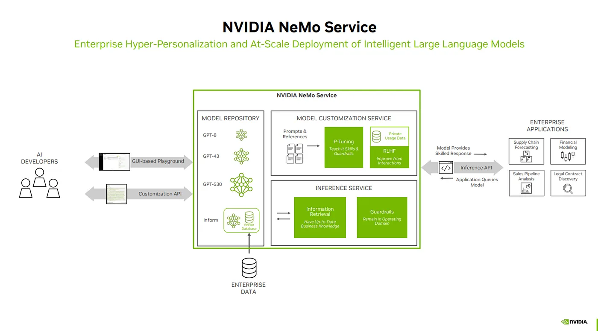
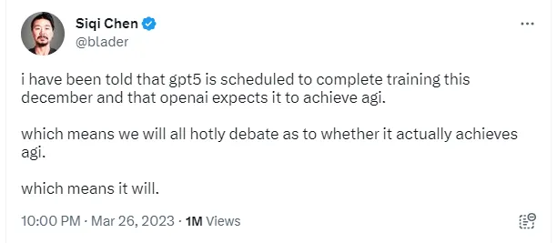

We are less than 4 months into the release of ChatGPT. The industry and the world has been turned up side down. Every transformational technology brings about imaginations, opportunities and changes. New winners will be anointed, and there will be losers. Below I share my thoughts and outlook of the industry of which I am a part. Part I of this article is here.
The future arrives faster than we think.
Last two weeks our industry witnessed perhaps the most intensive and impressive technology announcements in computing. The entire tech stack for the AI Internet is on full display projecting so much promise and excitement.
GPT4 was announced on 3/14, three and a half months after ChatGPT was released to the world that signifies the start of a new era, an iPhone moment, as NVidia CEO Jensen Huang put it at the GTC 2023 keynote on 3/21. And just 9 days later on 3/23, OpenAI announced plugins in ChatGPT that enable access to up-to-date information, run computations, or use third-party services, a moment many cheered as the App Store moment in its significance. Just for perspective, the iPhone was released on 6/29/2007, the iOS SDK was announced three and half months later on 10/17/2007 and released on 3/6/2008, ushering in the mobile Internet era.
On Monday 3/13, Stanford introduced Alpaca 7B, a model fine-tuned from Meta’s LLaMA 7B model which was just released to researchers on 2/24. In single-turn instruction following, Alpaca behaves qualitatively similarly to OpenAI’s text-davinci-003, while being surprisingly small and easy/cheap to reproduce. On the following Friday 3/24, just 11 days later, Databricks open sourced Dolly, built on an existing open source GPT-J 6B model from EleutherAI, and tuned with Alpaca’s instruction set, democratizing LLMs and transforming them from something very few companies can afford into a commodity every company can own and customize to improve their products.
Everything is about speed and accelerated computing. PyTorch got an upgrade on 3/15 adding a compiled mode that has the potential to speedup your models during training and inference.
For diverse AI workloads, NVidia launched a lot more inference power and data transfer speed to the world with its new hardware lineup esp. H100 NVL (for GPT like processing) and Grace-Hopper (for recommender systems and giant vector databases). Microsoft Azure is opening private previews to their AI supercomputer powered by NVidia’s DGX H100.
What is more noteworthy to me and less reported in the press is NVidia’s moving-up in the tech stack. Though still at its infancy, NVidia Nemo outlines a blueprint for a middleware layer that allows for custom LLMs to be trained, tuned and deploy at scale.
On the text to image front, MidJourney released V5 on 3/16, four and a half months after V4 alpha, which can produce photorealistic images at a quality level that some AI art fans are calling “too perfect.” Less than a week later on 3/21, Adobe announced Firefly, showcasing how generative AI can be seamlessly integrated into its Creative Cloud products to align with the iterative creative process.
Along the same line, on 3/16, Microsoft announced Microsoft 365 Copilot, showcasing how GPT-4 is integrated into its productivity suite, a little over one month after the company announced the new Bing and Edge on 2/7. The big guys are moving at the speed of startups, except for Google, who is leading in its AI technology but seems completely unprepared for the moment. Though still a credible, formidable and very relevant player, Google has something to learn from its friend in Redmond.
To add to the feast, on the development tooling front, GitHub announced Copilot X on 3/22 to bring GPT-4 to the IDE and command line, reducing boilerplate and manual tasks and making complex work easier across the developer lifecycle.
These technologies represent the best of the best and the state of the art in their respective fields. Watching the announcements one after another is like watching a splendid fireworks show, full of color, full of fanfare, full of excitements and cheers and sometimes pleasant surprises. A new AI stack is unfolding right in front of our eyes in the products that were shown during these 2 short weeks, 3/14 to 3/24.
Commenting just 2 days into the first week, Netscape and a16z founder Marc Andreessen has this to say:
A week later, 2 days into the second week, on 3/21, Bill Gates published an essay declaring “The Age of AI has begun”, comparing the technology developed at OpenAI to graphical user interface (GUI) in 1980, in his view, the only 2 technologies that struck him as revolutionary in his lifetime. Interestingly, both deal with the human-computer interaction in a totally different and better way. Some even suggested a name, LUI, language user interface. “Advances in AI will enable the creation of a personal agent. …This will both improve your work on the tasks you want to do and free you from the ones you don’t want to do”, says Gates, echoing Tim Berners-Lee.
It seems like time is being condensed. We are seeing so many reactions and innovations catalyzed by ChatGPT since its launch. It also seems like every single incremental technology advances in the past 20 years, be it neural nets, map/reduce, big data, accelerated compute with GPU, cloud services, python libraries, and the mostly unnoticed but important research progress of deep learning over many years, all contribute to this moment. We are just lucky to be living to witness a whole new platform being born and a whole new paradigm emerge. The world is changing right in front of us. New products and new capabilities in existing products are arriving.
It is now time to descend from the 60000 feet to the sea level and think about what all of these important announcements and changes entail and what the future may hold.
NVidia has effectively become the Sun Microsystem in the Desktop Internet era. Sun famously had a marketing tag line, “We are the dot in dot-com”, NVidia is the dot in dot-ai for the AI Internet.
The AI Internet era will demand a lot of accelerated compute. It remains to be seen how other players (both in Desktop gaming GPU space and data center GPU and DPU space) will respond to NVidia’s comprehensive offerings unveiled on GTC. But respond they will.
It also remains to be seen whether Google, with its TPU offerings, and Tesla, with its DOJO supercomputer, will enter the space in a serious way.
If web1.0 is a guide, there will also be one-box integrated and self-contained solutions, for local training and inferencing. One potential use case is personal agents and organization agents where storage and access to private and proprietary data is preferred to be done locally.
The capability of GPT4 from OpenAI has created a shock to the research community, esp. those in NLP and CV. Here is Yann LeCun’s reaction:
The biggest issue with LLM is hallucination. Yann is dubious about auto-regressive LLMs and has his own vision. Even Geoffrey Hinton does not think that back propagation is how the human brain works. Both of them believe that there will be a new kind of model research that deserves the attention from the research community.
Despite all of its issues, for the foreseeable futures, LLM will still be the king and the platform. It should be noted that the success of OpenAI is in no small part due to the painstaking training data collection, curation and engineering work that put into fine tuning the LLM with techniques like RLHF. This is what Meta is missing.
Ilya Sutskever, Chief Scientist of OpenAI, also mentioned model reliability and trustworthiness being the focus and frontier research of OpenAI. They are aiming to have the model ask for clarification when it is unsure and say it does not know when it does not know and do so reliably. His diagnosis on LLM is much more optimistic, the most surprising thing to him for his 20 years in the business, is that “it actually works”.
The release of the OpenAI Plugins not only platformize the model even more, I would argue it is necessary to do as they provide an architecture to address some of the criticisms of LLM.
There are 4 kinds of plugins introduced:
The plugin ecosystem will boom in the coming months and AI will behave more and more like a human assistant helping us do everyday chores. Once the number of plugins has grown, how do we ensure fairness, quality, and security? And because the plugins are hosted on the web, other LLMs can take advantage of the same plugins and immediately inherit the ecosystem for free (or not depending on how open OpenAI will be). We are still very early in the ecosystem’s evolution.
We will see several trends concurrently happening.
Also, multi-modal will be the theme in model offerings. We will see a permutation of X to Y capabilities in models where X, Y ∈ { text, image, audio, video, presentation, 3D model} or even more domain specific outputs like movie, music, sql, code, app, charts/graphs, UI design, CAD design, game characters/assets or proteins/genome sequences. Summarization, search, recommendation will expand from text to other modalities such as video summarization.
The web3.0 vision of a semantic web consisting of all types of agents interacting with each other and acting on our behalf is becoming more and more concrete. There are still infrastructure level issues such as authentication, authorization, payment that need to be resolved. I believe blockchain can play a part supplemental to existing technologies as the AI assistants become more and more democratized and prevalent across the world.
A new platform will always cause the boom of the middleware layer as more and more developers develop custom models and plugins. NVidia’s entry into this layer confirms the opportunities ahead.
We will see companies big and small entering this space providing distinct or more comprehensive offerings that target end to end development and deployment of new models and apps that are based on these models.
For training, capabilities from current prompt engineering tools, fune tuning tools, RHLF tools, dataset versioning and management tools, MLOps and LLMOps tools, data injection and chaining tools will all become part of the comprehensive middleware offerings.
For inference, we will see more accessible optimization techniques and tools being developed and made available, supporting a variety of architectures beyond NVidia’s offerings. And just like CDN for content distribution, we may have companies specializing in inference distribution.

Microsoft 365 Copilot sets a good example on how generative AI capability can be leveraged in applications and how a grounding system orchestrates the user, the user data, and LLM to produce a generative experience that is safe, contextual and user friendly.

It would not be surprising if Microsoft and some companies productize this grounding/alignment (responsible AI check, security, compliance, privacy, etc.) and orchestration capability to help developers which will become part of a middleware layer. And I suspect that more and more use cases will call for using the LLM as a classifier to produce somewhat deterministic output in a world with ever-expanding probabilistic outputs by chatbots.

While the world is still at awe with the generated images by MidJourney, Adobe Firefly offers a glimpse into the core ingredient of an application based on generative AI. The key is supporting iterative development. Applications that offer a one-shot generation of content without the ability to iterative on that content will not succeed. In Adobe’s case, the underlying model that supports Firefly can precisely and iteratively react to user continuous editing prompts after the model generates its first output. And when finer-grained editing is required, Firefly seamlessly blends in Adobe existing image editing algorithms to help create the content a creator truly intends to create without ambiguity or undesirable contents.
This experience will apply to any generated contents, be it text, image, audio, video, design or any other modality. We are still very early in this big wave of application rewrite. Those vendors who nail the user experience and the iterative development process, be it startups or established players, will win, those who do not will lose or die.
Andrej Karpathy has been spot-on on his prediction about Software 2.0 in 2017. But before we get to the point where neural net training is no longer necessary, as he predicted in his 2022 essay, Deep Neural Nets: 33 years ago and 33 years from now, we will see a lot of neural nets trained and deployed that will impact us personally, both positively and negatively. At every single layer of the tech stack, we will see startups reimagine the new way of life and work, and the established players rejuvenate to compete. The pace of unveilings may not be as intense as we just witnessed, but will be as spectacular.
Lex Fridman published his personal interview with OpenAI founder Sam Altman over the weekend. The same weekend, there were already talks about GPT5.

Rumor or truth, GPT5, GPT6, GPTn will come in their due time, each more powerful, even in different form factors. The impact of AGI will reverberate through our remaining lives. Are we as a human society ready? Are we as individuals ready?
While technology is advancing, we must also do our best to “maximize the probability that the future is good”, to borrow from Elon Musk. Let me end this article with what Lex said at the beginning of his podcast:
“We stand on the precipice of fundamental societal transformation, where soon, nobody knows when, but many, including me, believe it’s within our lifetime. The collective intelligence of the human species begins to pale in comparison by many orders of magnitude to the general superintelligence in the AI systems we build and deploy at scale. This is both exciting and terrifying. It is exciting because of the innumerable applications we know and don’t yet know that will empower humans to create, to flourish, to escape the widespread poverty and suffering that exists in the world today, and to succeed in that old, all-too-human pursuit of happiness. It is terrifying because of the power that superintelligent AGI wields to destroy human civilization, intentionally or unintentionally. The power to suffocate the human spirit in the totalitarian way of George Orwell’s 1984 or the pleasure-fueled mass hysteria of Brave New World, where, as Huxley saw it, people come to love their oppression, to adore the technologies that undo their capacities to think. That is why these conversations with the leaders, engineers, and philosophers, both optimists and cynics, is important now. These are not merely technical conversations about AI. These are conversations about power, about companies, institutions, and political systems that deploy, check, and balance this power, about distributed economic systems that incentivize the safety and human alignment of this power, about the psychology of the engineers and leaders that deploy AGI, and about the history of human nature, our capacity for good and evil at scale.”
Note: the above transcript was extracted by the code I wrote in less than an hour, with the help of ChatGPT and OpenAI’s Whisper API. This has become the new modus operandi.
Note: There were many more AI related announcements during these 2-week period than are listed above.